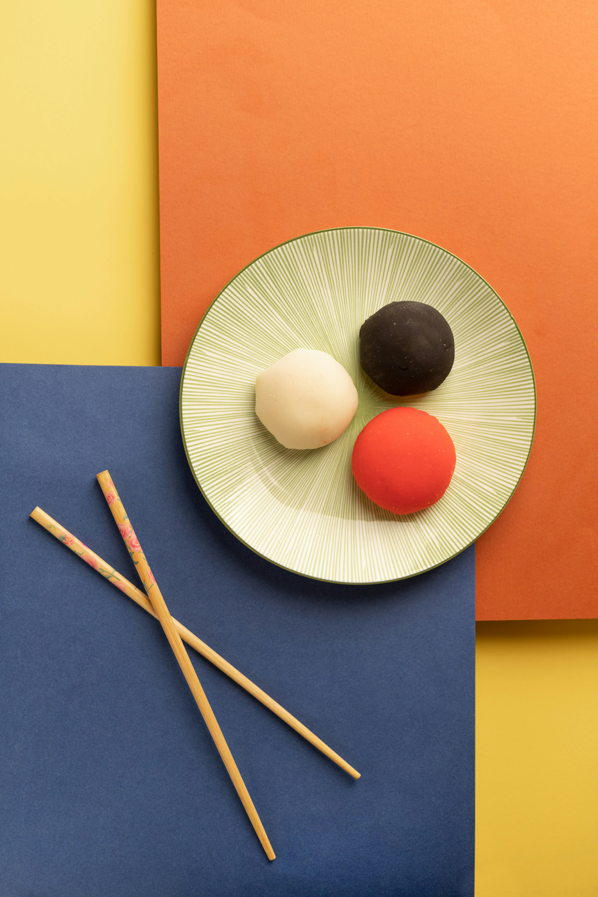

Mochi is a Japanese rice cake made of mochigome (糯米), a short-grain glutinous rice*. It’s naturally white, sticky, elastic, and chewy. It tastes like rice without filling or coating, but mochi is all about the texture. There is no other food that has this unique texture similar to mochi.
Outside of Japan, mochi seems to be associated with desserts like mochi ice cream and mochi stuffed with a sweet filling. However, when the Japanese hear the word “mochi”, it usually implies the plain mochi that can be used for both savory and sweets. Think of it this way: if steamed rice is one form of rice, then mochi is another form of rice.